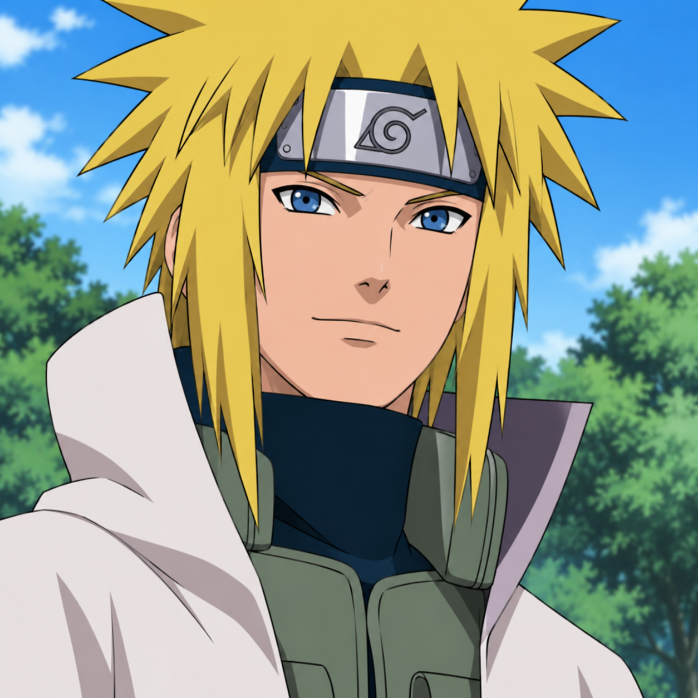
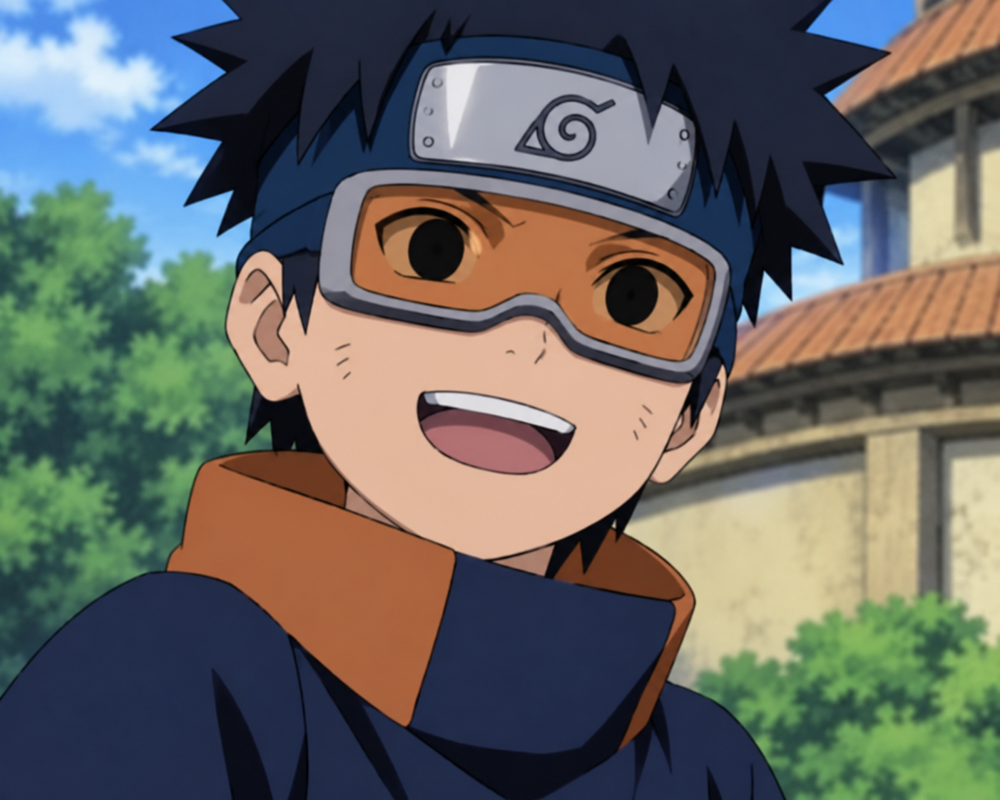
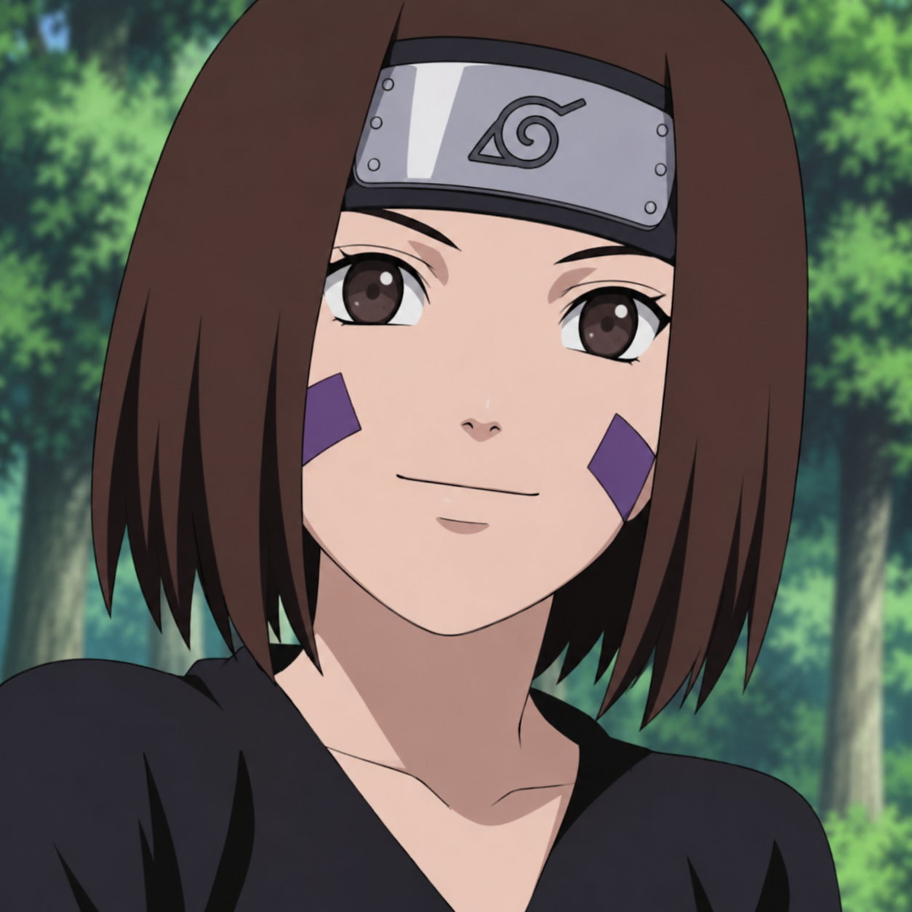
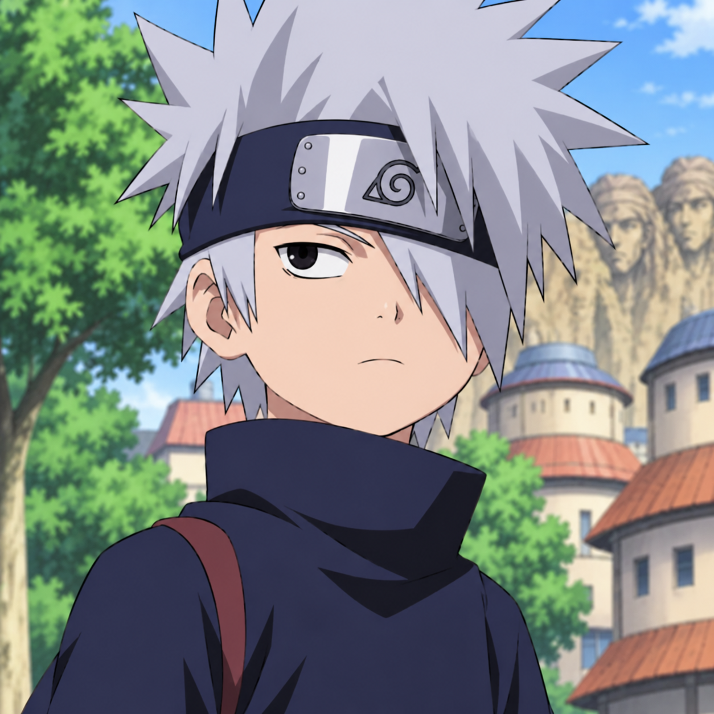

L'équipe Minato est constitué de Obito Uchiwa, Rin Nohara et de Kakashi Hatake et est sous la responsabilité de Minato Namikaze.
Il est le ninja ayant la responsabilité la plus grande dans le village, puisque comme tous les kage, il est responsable de la sécurité de son village. Il fut nommé par Hiruzen Sarutobi, le 3e Hokage, au détriment d'Orochimaru. Il était surnommé l'éclair jaune de Konoha en raison de sa vitesse de déplacement extraordinaire et de ses cheveux blonds. Les ninjas des villages ennemis avaient ordre de s'enfuir s'ils se trouvaient face à lui. Il est également le père de Naruto ainsi que le grand-père de Boruto et Himawari.

Obito Uchiha fait partie de la même équipe que Kakashi et Rin, sous les ordres de Minato Namikaze, futur 4e hokage. Souvent en retard, peu motivé pour la bataille et jamais à court d'excuses, Obito est excédé par Kakashi qui le lui rend bien.

Rin Nohara est une kunoichi de Konoha appartenant à l'équipe Minato, aux côtés de Kakashi Hatake et Obito Uchiha. Gentille et attentionnée, elle est spécialisée dans le ninjutsu médical. Durant la troisième grande guerre ninja, elle devient le réceptacle du Sanbi, le démon à trois queues. Sa disparition marque profondément Kakashi et Obito.

Kakashi Hatake est un jeune ninja de Konoha, devenu genin très tôt grâce à ses grandes capacités. Il fait partie de l'équipe Minato avec Obito Uchiha et Rin Nohara. Sérieux, froid et très doué, le Sharingan après l'avoir reçu d'Obito lors d'une mission. Il est surnommé "le Ninja copieur" et "l'homme au sharingan".
